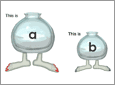
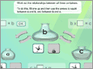
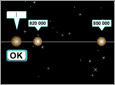
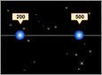
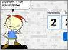

Squirt – Two containers

Squirt – Three containers

Scale matters – Range of numbers

Scale matters – Simple units
The Divider – Solve your own

The Divider – with or without remainders
The Multiplier
The Part Adder
The Number Partner